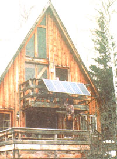

ENERGY AND ENVIRONMENT
Is President Clinton's Million Solar Rooftops" initiative just a pipe dream or the equivalent of JFK's "Call to Space"?-By Jhon Schaeffer
They say the darkest hour is just before dawn. Ever since solar electric technologies were developed in the 1950s, as a means of powering up the space program, the industry has been alternately hailed as the only viable solution for energy independence, and lamented as the unworkable pipe dream of a handful of environmental idealists. With the disappointing performance and subsequent disappearance of 80s era tax rebates for solarization, and an increase in the availability of cheap fossil fuels from foreign markets, the future of solar electric has made those of us who five to perpetuate it at once hopeful and daunted. The imminent deregulation of utility providers, aggressive new government incentives, and President Clinton's ambitious initiative to bring one million solar electric energy systems to American rooftops by 2010 has dramatically altered the global future of renewable energy, however.
While government and utility industry nay-sayers have been moaning about the impracticality of producing, delivering, and metering solar electric energy, it has been left to relatively small companies to perfect the technology that makes home-based solar electric generation not only practical, but cost-competitive with utility generated electricity. As utility deregulation becomes a reality, beginning early in 1998, consumers will-for the first time in history-be able to put their utility dollars where their convictions are.
On January 1, 1998, California led the way down the road to energy independence by fully embracing utility deregulation years before the rest of the nation. This is not surprising considering the exorbitant rates California residents have been shelling out for their power. Despite the promises of cheap electricity mouthed by utility company executives attempting to justify their nuclear boondoggles, California rates have historically been among the highest in the country. Essentially, deregulation means that, once Big Power has been dissected into a number of Little Power Lines, consumers should be able to sort through the rhetoric and choose not only the price per kilowatt, but the source of the electrons zooming into their stereo systems.
For those whose only consideration is the bottom line, there will undoubtedly be cheap coal-fired and nuclear-generated power, priced to keep consumers on the fossil fuel grid. Fortunately for the planet, there are dozens of renewable energy based players gearing up to deliver the same reliable power, but generated by solar, wind, biomass, geothermal and small scale hydro technologies. What constitutes truly renewable, sustainable, or "green" electricity is still a subject of avid debate, with partisans lining up behind their personal pick. The good news is that consumers will be able do the same thing: investigate the pros and cons of various electricity-generation methods, make an informed decision, and switch to the source of their choice. On the one hand, you won't have to let the governing body of your local power company choose for you anymore. On the other hand, the responsibility for choosing wisely will rest squarely on the individual consumer.
With all our optimism, even deregulation is just a glimmer of the coming dawn of our new solar era. While deregulation promises lower rates, it virtually guarantees that power consumers will be bombarded with competing claims and confusion. Everyone remembers how telephone service started sliding down the slippery slope after deregulation; business analysts and consumers alike agree that the quality of phone service today leaves much to be desired compared to the pre-regulation era. Will the same thing happen to utility delivery after deregulation? It might. All the more reason to beat the fossil fuel industry by taking advantage of the incredible new incentives for generating your power at home.
It's hard to believe, but the U.S. government actually learned something from the ill-fated rebate programs it staged in the 80s Brave new incentives are now offered directly to manufacturers, giving consumers the benefit of lower prices without reams of paperwork, initial cash outlay, or waiting for a rebate check. Similar to programs deployed effectively in Japan and Germany, the Federal "Team Up" incentives subsidize the maker's cost of producing utility-connected residential photovoltaic systems, rather than rebating the user's purchase price. Similar state sponsored subsidy programs currently in the works will allow even more savings, varying by state. In bottom line terms, the result is an incredible, hassle-free 40% to 70% reduction of the consumer cost of installing a solar-electric system.
As an example, the typical household uses about 700 kwh of utility-generated electricity monthly. Setting aside the issue of reducing power consumption through conservation and energy-saving technology the consumer would need to install a five kilowatt photovoltaic system to meet existing needs. At pre-incentive prices, we're talking about a cost of $10 per watt or more, or about $50,000. After Federal subsidies (about 40%) and projected state subsidies (about 30%), the post-incentive cost for the same system could drop as low as $3 per watt, or $15,000. According to Vincent Schwent of the California Energy Commission "Solar systems installed at $3 per watt are competitive with current utility company prices." We don't need Vince to tell us that $15,000 sounds a whole lot better than $50,000.
The really exciting part of this whole program is that the bulk of the subsidies are being used for the manufacture of utility-connected solar electric systems, also known as "utility intertie" systems. This is the technology that makes home-generated solar the cleanest, most viable power source on the market. The concept is simple but beautiful. During the day, power from your rooftop PV array is routed into the utility breaker box for home use. What? You mean you use most of your power at night when you're actually home? No problem. All day long, when your empty house's power needs are minimal, excess home-generated power is sold back to the utility company and your meter runs backward. At night, when your usage peaks, the utility sells power back to you. California, and 14 other states as of this writing, already have net metering laws on the books to ensure that the power traded back and forth between your rooftop and the local utility company is sold at exactly the same price. In some locations, particularly the sunny Southwest, homeowners may even get a check from their power company at the end of the month, instead of a bill.
So what's the catch? Initial incentive programs are limited in scope due to a finite amount of government dollars available. They will be allocated on a first-come, first-served basis, and will be monitored by numerous agencies over the life of the system. It has been estimated that if only 10% of the nationwide population chooses electricity produced by renewable energy sources by buying from clean and green power companies spawned by deregulation, there will be a net increase of 30% in available renewable energy sources. That figure doesn't even include the increased demand created by consumers who install their own heavily subsidized utility intertie systems. The basic laws of supply and demand dictate that the cost of manufacturing solar systems will decrease as the volume of sales increase.
Real Goods, in conjunction with Astropower, the second largest manufacturer of PV systems in the country, and Trace Engineering, the leading power conditioning manufacturer, will be providing up to 25 of these heavily discounted solar electric power systems in the San Francisco Bay Area in the first quarter of 1998. Although we recognize that 25 systems is a drop in the energy bucket, the value of this pilot program is that it demonstrates that utility intertie systems will satisfy the needs of the average energy consumer, without draconian austerity measures to reduce consumption. After all, our voracious power appetite, as well as a national unwillingness to make substantial changes in consumption patterns, has been the biggest drawback of stand-alone solar systems for years. Collectively, we aren't going to give up our electric toothbrushes without a fight. The new utility intertie systems allow a consistent delivery of enough electricity to satisfy existing usage habits, by making possible a seamless transition front rooftop-generated electricity to utility-generated electricity. By combining a utility intertie solar electric system, made costeffective by government subsidies, with your choice of a green utility provider, made possible by utility deregulation, you could conceivably never use a single electron generated by fossil fuels.
The intention of the Team Up subsidy program is to provide a launching pad for clean sources of power; the incentives will taper off over five years, at which point these technologies should be able to stand alone and compete in the open market. The California state incentives are not limited strictly to solar electric generation, by the way. Utility ratepayers in the state will he contributing $540 million over the neat three years to provide incentives for existing, new, and emerging green technologies. While largely earmarked for existing renewable technologies like utility scaled wind farms and hydro-electric, there are numerous proposals for more exotic technologies on the horizon.
Nor No discussion of a solar future is complete without a cursory glance at Clinton's Million Rooftops Initiative. The idea is to install 20,000 solar-electric systems can Federal buildings by 2010. How does this help the average consumer? Again, the increased manufacturing demand can't help but bring prices down. Further, the Initiative has the potential to create as many as 70,000 new high-tech jobs. Although details remain to be worked out, we could see federal grants to further reduce system costs to the consumer, as well as low interest loans to solar-electric pioneers.
Is it possible that the dawn of a new solar era will put fossil fuels to rest at last? Yes it is. A heightened mainstream awareness of the perils of resource depletion and global warming is finally waking up the powers that be, and energy independence is at last becoming a technological reality. Developing nations, many of which are eager to follow the U.S. pattern of unbridled power consumption and the lifestyle it permits, are taking a closer look at renewable energy systems. With an unprecedented level of government support for renewable energy manufacturers as demonstrated by the new subsidy programs and imminent deregulation our nation is in the unique position to prove that solar energy, and energy efficient technologies in general, are the cornerstone of our sustainability as a species. With the ball firmly in the consumer's court, the last remaining question is whether or not we'll run with it or just let it lie.
In the coming months, MOTHER plans to report on exciting developments in the renewable energy industry that will revolutionize the way power is provided and consumed in America and worldwide. In future columns, look for updates on a new alternative to conventional air conditioning, the newest home water and wind power systems, and a revolutionary new photovoltaic power system that plugs into a standard household outlet, painlessly transforming any home in America into a significant contributor to solar electric generator thanks to Real Goods for its help and assistance. A retail and mail-order supplier for renewable energy products, they can be reached at 1-800-762-7325
|
SOLAR ENERGY INTERNATIONAL |
 |
|